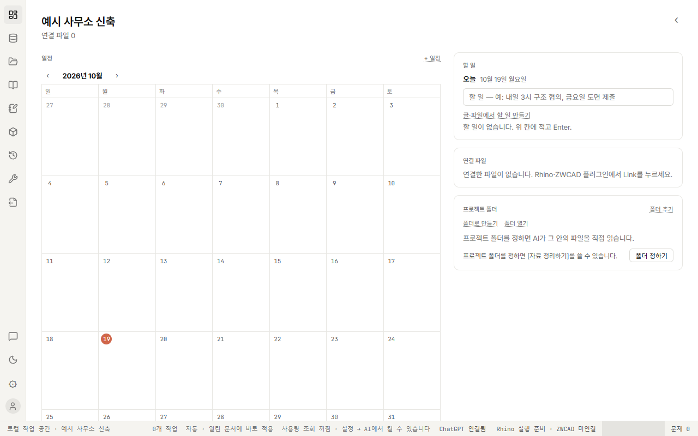
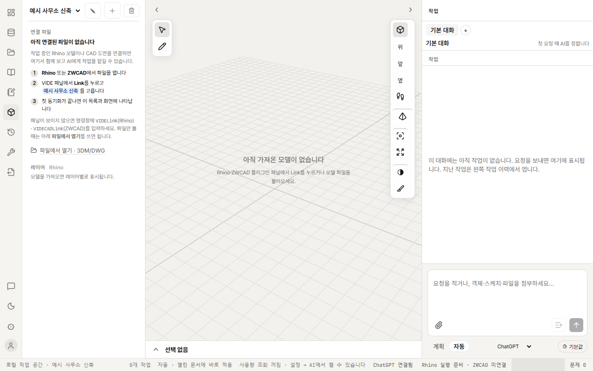
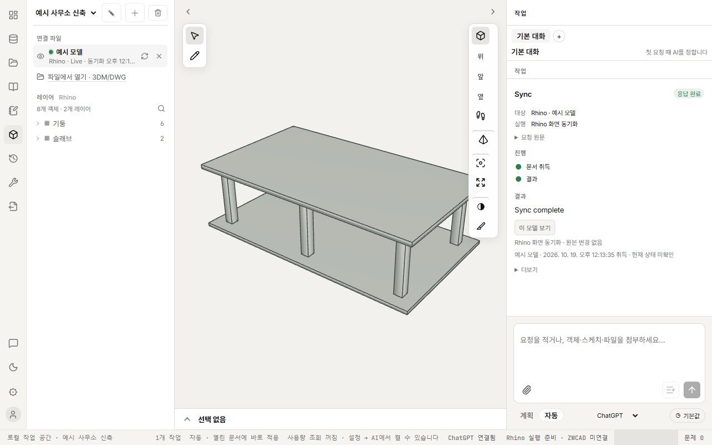
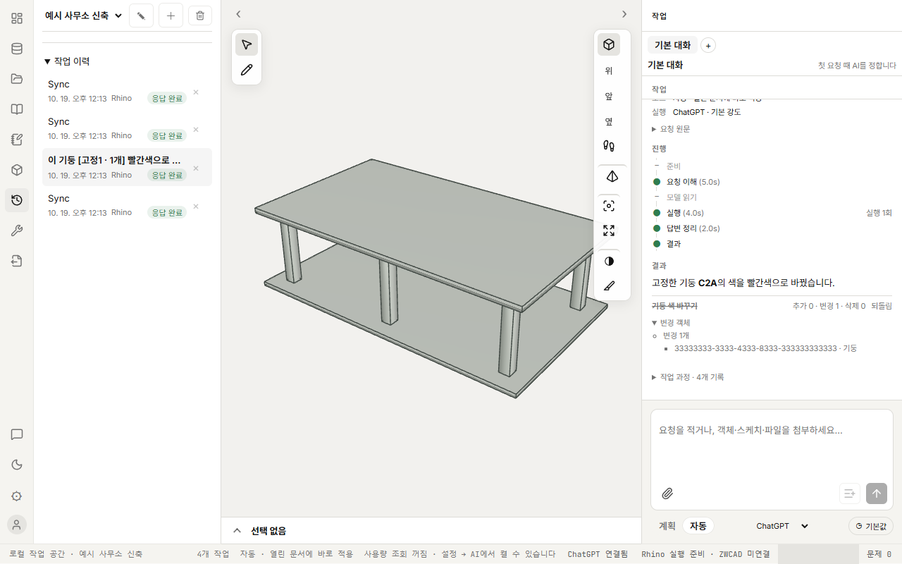

한 요청의 실제 화면 — 기둥 색 바꾸기
프로젝트를 열고 Rhino 파일을 연결해, 기둥 하나를 골라 "빨간색으로 바꿔줘"라고 요청하고 되돌리기까지. 지금 만들어진 실제 화면입니다.
-
S1프로젝트를 연다대체

프로젝트를 골라 홈을 연다.
일정과 할 일, 연결 파일 수가 보인다. 아직 연결 파일 0.
근거 SPEC-01.14
프로젝트 목록은 이름 칸의 펼침 목록이라 찍히지 않아 대시보드로 대신했다.
-
S2작업 화면 첫 상태

3D 화면으로 들어간다.
연결 파일이 없어 Link 하는 법 3단계와 빈 화면이 보인다.
근거 SPEC-01.11
-
S3Rhino 파일 연결과 Sync합성 모델

Rhino에서 Link를 누른다(클릭 없이 자동 Sync).
연결 파일·레이어 2개, 3D 모델, 오른쪽에 Sync 작업 카드.
근거 SPEC-01.9
-
S4기둥을 골라 문장에 넣는다
![기둥 하나 선택 후 입력창에 '이 기둥 [고정1 · 1개] 빨간색으로 바꿔줘'](assets/color-request/04.png)
기둥을 클릭하고 입력창의 '선택 1개 첨부'를 눌러 문장에 넣는다.
고른 기둥이 강조되고 문장 안에 [고정1 · 1개] 표시가 생긴다.
근거 SPEC-01.10
-
S5요청이 진행된다AI 응답 주입

보내고 기다린다. 필요하면 [추가 지시].
대상·핀·모드, 진행 단계(요청 이해 → 실행)와 AI 한 줄 설명.
근거 SPEC-02.11
AI를 부르지 않고 진행 상태를 시험용으로 넣었다.
-
S6결과: 기둥이 빨갛게AI 응답 주입

3D에서 바뀐 기둥을 확인한다.
결과 한 줄, '추가 0 · 변경 1 · 삭제 0 · 적용됨'과 [되돌리기].
근거 SPEC-02.13
변경 객체 목록이 이름 대신 긴 ID로 보인다.
-
S7되돌리기AI 응답 주입

[되돌리기]를 누른다.
작업 줄이 취소선과 '되돌림'으로 바뀌고 기둥이 원래 색으로 돌아온다.
근거 SPEC-02.13
-
S8작업 이력에 남는다

왼쪽 [작업 이력]에서 지난 요청을 연다.
요청과 Sync가 시간순으로 쌓인다. 되돌린 요청도 '응답 완료'로 남는다.
근거 SPEC-03.2
Sync 줄이 요청 사이에 섞여 요청을 찾기 어렵다.
카드의 단추를 누르거나 메모를 적으면 여기에 피드백이 만들어집니다.